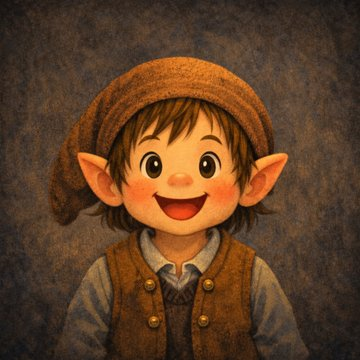
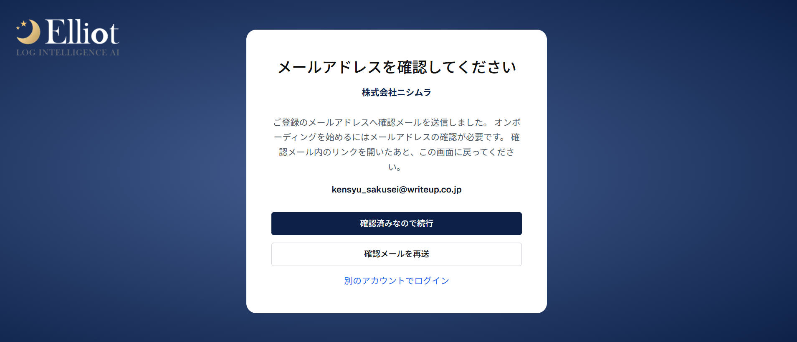
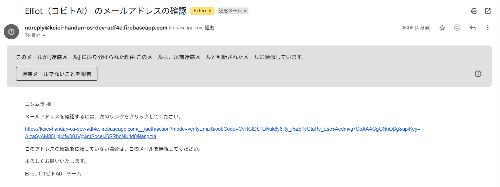
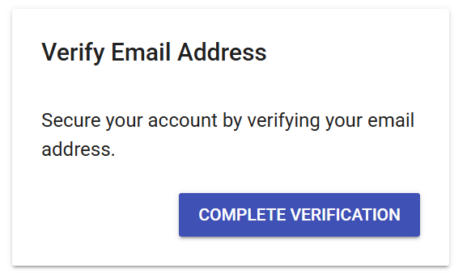
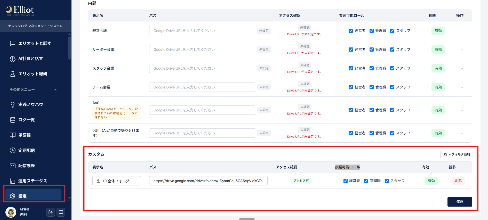
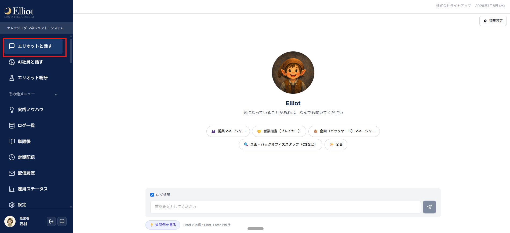
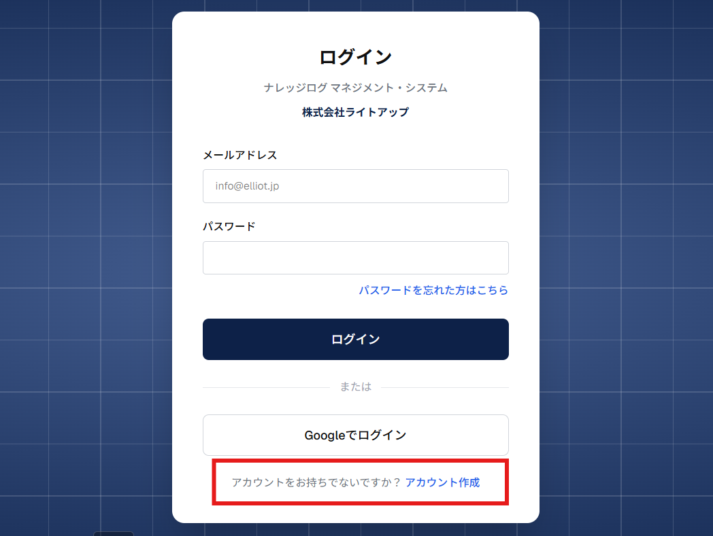
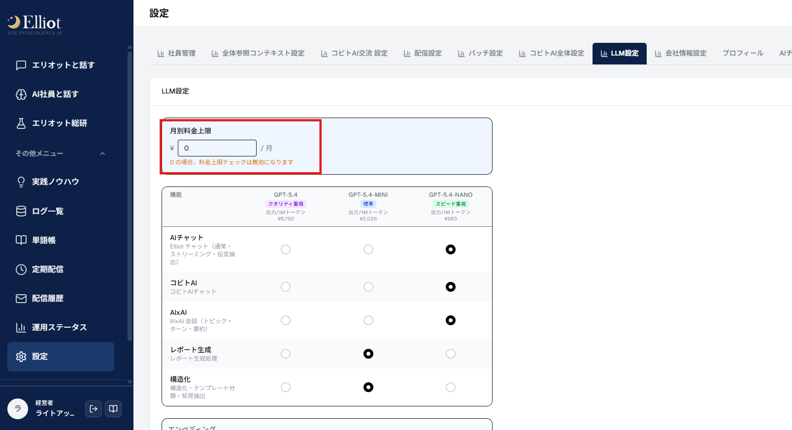
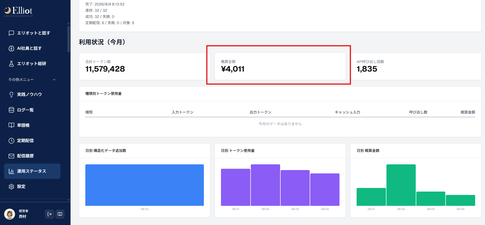

こんにちは。ボクの名前はElliot。これからよろしくお願いします。
まずはボクがみんなのログを読むために、ちょこっとだけ設定をしてほしいんだ。
アカウント作成、プロフィール設定、Googleドライブとの連携の順に進めます。以下の手順で、上から順に進めてみてください。
商談やMTGの文字起こしなど、テキスト化された情報全般を指します。Elliotはこの「ログ」をもとに、日々のレポート作成やアドバイスの生成を行います。
ログが溜まっていくと、日々のレポートだけでなく、商談の勝ちパターンや社員一人ひとりの考え方・ノウハウが少しずつAIに蓄積されていきます。
その結果、将来的には「○○さんの商談、最近どんな感じ？」「うちのチームの目標に対しての進捗は？」のように、AI社員に直接質問して答えをもらえる状態を目指せます。
最初の設定は少し手間に感じるかもしれませんが、ここで溜めたログが後々の資産になりますので、ご協力いただけると嬉しいです。
Elliotまずはアカウントを作ってね。メールの確認も忘れずに！
メール等でご案内した○○さま専用アカウント作成URLより、アカウントを作成してください。
※パスワードは8文字以上で、大文字・小文字・数字を含めて設定してください。
※ログインURLをお送りした先のメールアドレスのみサインアップ可能にしております。
作成後、メールアドレスの認証をお願いします。
手順は下の「メールアドレス認証の手順」をご覧ください。認証後はElliotからの質問に回答すると、ログインいただけます。
アカウントを作成を押すと、このような表示がされます。

件名「Elliot（コビトAI） のメールアドレスの確認」のメールを開き、メール内のリンクをクリックしてください。
※メールが確認できない場合、迷惑メールフォルダに届いていないかご確認お願いします。

クリックするとこのような表示がされるので、青いボタンをクリックしてください。
「メールアドレスは確認済です」という表示がされたら成功です。

元の画面に戻り、確認済みなので続行をクリックし、プロフィール登録に進んでください。
Elliotここでボクがいくつか質問するよ。答えはあとから変えられるから、気楽に答えてね。
メール認証が完了すると、小人のElliotが登場し、10問前後の質問をしてきます。以下のような内容に順番に答えていってください。
Elliotボクがログを読めるように、Googleドライブのフォルダを見せてほしいんだ。
連携したいGoogleドライブのフォルダの共有より、以下のメールアドレスに対して閲覧者権限を付与してください。
※Googleドライブにログが集約されていない方は担当の西村までお問い合わせください。自動で集約する手順など別途ご案内いたします。
Elliot最後に、そのフォルダのURLをボクに教えてね。これで準備はおしまい！
Elliot管理画面内の設定＞全体参照コンテキスト設定に、ログが集約されているGoogleドライブのフォルダURLを入力してください。
※参照可能ロールでチェックを付けた役職の人のみ、ログを閲覧可能です。
※もしMTGごとにGoogleドライブフォルダURLが分かれている場合は、カスタムより上の各項目にURLを記載してください。

右下の保存ボタンで保存後、ステータスが「有効」になっていれば連携成功です。
Elliot管理画面内の「エリオットと話す」より、Elliotに話しかけてみてください。ログにある内容を読めているかどうか、ご確認ください。
Elliotログは夜のあいだにまとめて読んでおくね。明日以降に話しかけてくれたら、ちゃんと答えられると思うよ。
※ログの取り込みは即時ではなく、その日の夜間にまとめて反映されます。連携直後はまだ回答できない場合がありますので、翌日以降に試していただくことをおすすめします。

御社専用のログインURLを共有し、登録をしてもらってください。
ログイン用ページ下部のアカウント作成から登録が可能です。

基本設定が完了したら、このあともログと一緒に以下のような情報も読み込ませてみてください。社員一人ひとりについてのElliotの回答精度が上がり、マネジメント工数の削減にもつながります。
これらの情報をテキスト化してGoogleドライブに入れておくと、こんな質問にもElliotが答えられるようになります。
※STEP 02で入力した「設定」内のプロフィール項目（目標や日報など）も、同様の目的で活用いただけます。
※上限額を超えると、それ以降Elliotの回答が停止します。追加で利用したい場合は上限額を引き上げてください。


Googleドライブにログが集約されていない場合や、Zoomなどで文字起こしが残らない場合も、個別にご相談いただけます。